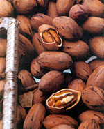
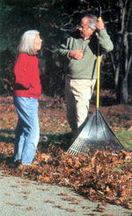

Pecans for all Regions
The pecan is the best-tasting nut you can buy anywhere! Well, that's my sentiment anyway. About 30 years ago, I purchased 72 acres in Michigan. I then thought, "Why not try growing pecans?" Being a semi-intellectual at heart, I read up about pecans. There are three basic strains of pecans: the northern, southern and western. The northern strain is cold hardy to Zone 5. Good! However, I then learned more. The nut, said the "experts," would not "fill" in Michigan. This meant there would be a shell but no meat. Bad!
Then, in a Northern Nut Growers Association newsletter, I read about a planned expedition to southwestern Wisconsin to search out productive, cold-hardy pecans. The expedition was successful, and I bought about 25 nuts from the group that I planted in late fall. Happily, most sprouted the next spring.
I have more than 20 medium to large trees from this planting. It took about 15 years for the trees to begin bearing. The nuts from the trees that are bearing are not only completely filled but also deliciously sweet, although smaller than the southern variety. The nuts on the tallest tree (almost 40 feet tall) start to ripen in early October. To be successful at growing pecan trees, you need the right strain for your environment. The Wisconsin strains came from trees growing in Zone 4. If you live in Georgia, you don't want to plant a northern strain. All pecan trees need some cold, but those from the Far North need lots more cold than those from the South!
Growing trees from nuts is the easiest and cheapest way of starting your pecan plantation. All you do is plant the nut about 3 inches deep where you want the tree to grow. Plant in late fall-right after the nuts are harvested-or keep the nuts refrigerated and plant them in April. (Pecans purchased from the grocery store usually will have dried out too much to be viable.) Taking care of pecan saplings is simple-give them plenty of water. Also, make sure that your children don't cut them down, that you don't back into them with your pickup or that your livestock doesn't eat them! Usually pecans are harvested in autumn or early winter when the shuck loosens from the shell or even splits open. Often, people wait until the nuts fall to the ground on their own. However, if you try this, you may find squirrels get them first.
For more information on northern pecans, contact the Northern Nut Growers Association at www.nutgrowing.org . My favorite pecan tree sources include Grimo Nut Nursery [(905) 9346887; www.grimonut.com ], and Nolin River Nut Tree Nursery ((270) 369-8551; www.nolinnursery.com ].
TOM FOX
Newago, Michigan
Bucket Brigade
I have a side room that gets flooded from time to time. When my rusty wet/dry vacuum cleaner canister developed leaks, I snapped the top onto a 5-gallon bucket. It works great and the bucket has a handle, so I can carry the water outside with less spilling. Sometimes I use four or five buckets. When one is filled, I just snap the top onto another empty and keep going.
CAROLYN LOWORN
Woodland, Alabama
Barn Buddies
We are homesteading on 140 acres in northwest Ontario. This area has a large number of insects, probably because of all the water. We have two cows-one heifer and one steer; about two weeks before they were born, I arranged for some chicks to hatch.
When the calves were about a week old and the chicks were feathered, I allowed the chicks into the barn. They stayed with the cows and calves all day, eating the flies that bothered the stock.
Everybody won-the cows weren't fighting the bugs, the chicks got the protein they needed, and we got great-tasting chicken and beef
ANN NEWMAN
Dinorwic, Ontario
Handling Hoses
On my homestead, I use garden hoses for a variety of chores. This means that I tend to leave multiple lengths of hose and the connected attachments lying around in the elements for months at a time. The brass couplings on hoses can be prone to corrosion and seizing though, which may result in leaky connections, difficulty in removing attachments, or worse, being unable to disconnect the hose from the faucet.
To prevent these problems, I apply a small amount of antiseize compound (such as Loctite or Never-seez) onto the threads of garden hose fittings. If there happens to be an accumulation of lime or oxidation already on the threads, I remove it with a small wire brush prior to application of the compound.
Use the compound sparingly; the metallic paste is messy and can stain clothes, so wipe off any excess with alcohol. I've used this approach with my hoses for the last few years with success; at the end of the season, I simply disconnect everything without frustration. The antiseize compound is inexpensive, and readily available through hardware retailers and automotive supply stores.
DENNIS DIVINE
Joplin, Missouri
Walking Builds Community
I am an avid walker who follows the same route every day. I love the rhythmic pleasure of walking, the wind in my hair, the rain on my face and the change of scenery wrought by the seasonal changes.
But there is more to walking than exercise. When I go walking, I also go visiting. Walking creates an interlude in my day when I stop to talk with friends and catch up on neighborhood news. Friendships grow from such small encounters, and I feel my walking has spun a welcome web of friendship around my neighbors and myself. I treasure the people I've met and the community they provide.
Such connections have been possible because of the regularity of my walks. I have followed the same route every day for years, becoming a neighborhood fixture. As I go by, neighbors cannot help but smile and wave.
Over time, waves turned into casual conversation, and casual conversation into warm relationships, and, in some cases, close friendships. It is almost impossible to see the same people every day and not have a friendship grow.
Walking has also increased the variety of people in my life. Through its simplicity, walking eliminates barriers that keep people apart. I talk with neighbors of all ages. We are at different stages of our lives, but my walk brings us together, making it possible to offer each other a mix of practical information, emotional support and new perspectives.
Most special to me are the neighbors whose children are grown. The wisdom of people who have "been there" has helped me maintain my balance as I struggle to raise my sons. I know that if I've had a rough day with a moody teenager, I can go for a walk and run into one of my older friends who will make me laugh. I suspect my children and I are better off for it.
Some of the neighborhood exchanges are utterly mundane: We share advice on how to get rid of the dog's fleas or how to keep our daisies from dying. Sometimes we ask where to get a lawn mower fixed.
And, we share our things and do each other favors, too. I have shared flea spray, swapped flowers, tried out a back-saving snow shovel and watered plants for neighbors on vacation. We have brought each other casseroles when a baby has arrived or someone is ill.
Such are the small exchanges of life that give comfort. They remind me of the old-fashioned, over-the-backyard-fence kind of communication that few enjoy today. Without these simple connections, we feel isolated.
Without walking, I have a hunch I would be one of those women who doesn't know her next-door neighbor. Walking is an antidote-it slows me down, gets me out, gets me talking and socializing, laughing and crying. When I'm walking, I'm visiting. I feel connected, whole and sane.
Not bad for a simple walk.
CHRISTINE RIDOUT
Wayland, Massachusetts
Plant Protection
If you buy young trees and plants growing in black plastic pots, keep them in shade until you plant them. If left in direct sun, the black pots heat up and damage the roots.
GARY MYRONICK
Port Townsend, Washington
Slippery Clean
Grass would always stick to the plastic underside of my electric lawn mower, but the manual said never to use water to spray it off. After a lot of hand brushing, I decided to coat the shroud with spray vegetable cooking oil. When I finished cutting the lawn, that shroud was sparkling clean.
DON PEYTON
Monmouth, Oregon
Drying Herbs
I have found the perfect place to dry herbs: my car on a hot, sunny day. I place fresh picked herbs in a large paper bag, put the bag in the car and roll up the windows (leaving one cracked a half inch to let moisture out). It takes a day for the herbs to dry. Then I strip the leaves from the stems and store them in an airtight container. An added advantage: They're a lovely car air freshener.
MARIA BERGER
Marshall, Virginia
Snackin' with 3 Sisters
Being part Blackfoot, I like to preserve my heritage wherever I can, especially when it comes to working with Mother Nature. I have tried growing the Three Sisters-corn, squash and beans-a few times and usually ended up with way too much of one or all of the crops.
Then I stumbled upon a great combination that provides us with snacks for the rest of the year. I grow popcorn, pumpkins and pole beans.
It doesn't take up too much room in my garden, because they are grown together. The popcorn grows strong and tall, the pumpkin vines meander around the stalks and the beans use the corn stalks for poles.
The best part is the harvest. We dry the popcorn right on the cob, and I remove all of the pumpkin seeds, clean, prepare and roast them. Packed in airtight packaging, both crops last throughout the winter. Of course some also go out to family and friends who enjoy them, too.
The pole beans may not sound like an ideal snack. But if you have ever munched on a few right off of the vine, you would think differently.
You can get popcorn from various seed catalogues and even in some garden shops and nursery centers.
M. EILEEN O'DEA
Central Bridge, New York
Dry-bean Britches
When I hear the word "britches," I picture men's trousers, but I learned from a neighbor there is another meaning. We were invited to supper and Mr. Thompson announced, "Maggie will stir up a batch of leather britches, and we'll have a feast."
We sat down to a fragrant, steaming bowl of long, green beans topped with butter and bacon. "These are dried green beans," my neighbor said. "In Montana, we string them from wall to wall on heavy twine and let them dry; then we layer them into big jars or crocks. To eat, we soak a meal's-worth in water for a while, add a big chunk of ham, salt pork or bacon, and cook until tender. A meal fit for a king."
Now I plant plenty of 'Kentucky Wonder' pole beans to dry on strings and enjoy all winter, too.
DORIS E. STEBBINS
Danville, Vermont
Mother Earth News
|
 Ridout says when she's walking she feels ""connected, whole and sane."" |
 |
|